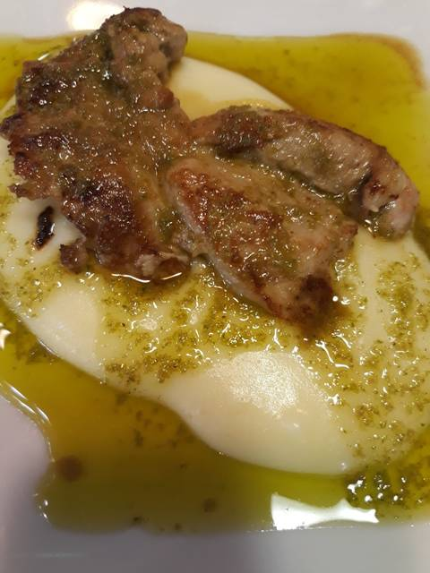

Presa Ibérica con salsa verde y pure de patata

Tiempo: aprox. 1 hora
Comensales: 4 personas
- Ingredientes:
- 500gr Presa Ibérica
- 500gr Patatas
- 1 Cucharada de Mantequilla
- 2 Cucharadas aceite de oliva
- 1 Vaso de Leche
- 1 Pimiento verde grande picado
- 4 Dientes de ajo pelado
- 2 Cucharadas de vino blanco de cocina
- 1/2 Cucharadita Azúcar
- 50gr Cilantro fresco
- Sal y Pimienta al gusto
Preparación:
Paso 1
Pelamos las patatas y las partimos por la mitad. En una olla con agua y un poco de sal las cocemos. Mientras preparamos
el Mojo Verde.
Paso 2
Para la salsa verder añadidos en un vaso de batidora pimiento verde picado, 4 dientes de ajo pelados, 2 cdas vino blanco,
1/2cdta sal, 1/2 cdta azúcar y el cilantro fresco picado.
Paso 3
Batimos bien hasta que no haya ningún trozo grande, que quede bien fino. Reservamos.
Paso 4
Cuando las patatas estén cocidas, las escurrimos. Colocamos en un recipiente y le añadimos una cucharada mantequilla y un
chorreón de leche. Salamos y trituramos con batidora, la textura debe ser suave, sedosa. Reservamos.
Paso 5
Vamos con la presa, la cortamos en filetitos medianos. En una sartén con un poco de aceite de oliva, las marcamos a fuego fuerte.
Salpimentamos al gusto, bajamos a fuego medio y dejamos que se termine de hacer, y vertemos por encima un poquito de salsa
verde, para que se vaya impregnandose de sabor. Apagamos el fuego
Paso 6
Emplatamos, en el recipiente donde vayamos a presentar el plato, ponemos un lecho de puré de patatas y encima la presa a la
que volvemos a rociar una cucharadita o cucharada dependiendo de como nos guste de salsa verde. Y listo a disfrutar de este plato.